Forwarder؛ ادامه همان زبان بصری
نسخه ۲.۱ آماده مرور نهایی است. همه تصاویر محلی و دادهها ساختگیاند. مرجع سمت راست از componentهای نمایشی کد فعلی رندر شده؛ صفحه واقعی محصول یا Production نیست. تأیید نهایی انسانی هنوز انجام نشده است.
باز کردن نمونه تعاملی · برای دیدن هر تصویر در اندازه کامل روی آن بزنید.
فرم و کنترل
کنترلهای واقعی کد فعلی، رندر محلی با داده نمایشی
{kind=link}
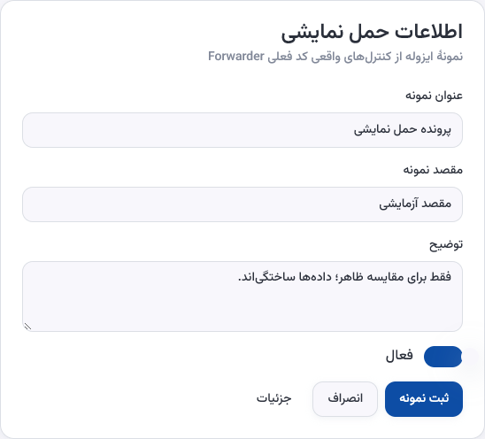
فرم تخصیص V2.1؛ مقادیر رنگ و شعاع با مرجع برابرند
{kind=link}
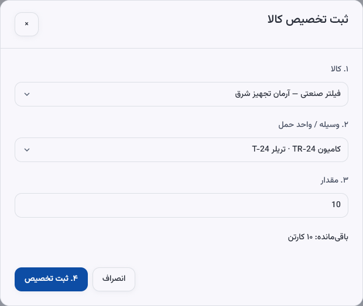
کارت، سربرگ و اولویت
Card / Table / Badge واقعی؛ پوسته مرجع بازسازیشده است
{kind=link}
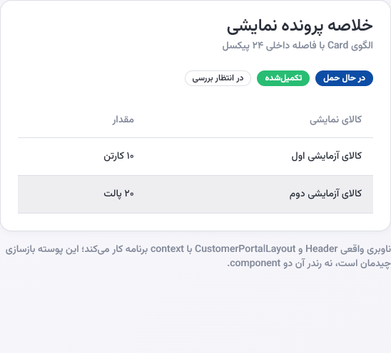
سربرگ فشرده، اقدام بعدی، توجه و فعالیت
{kind=link}
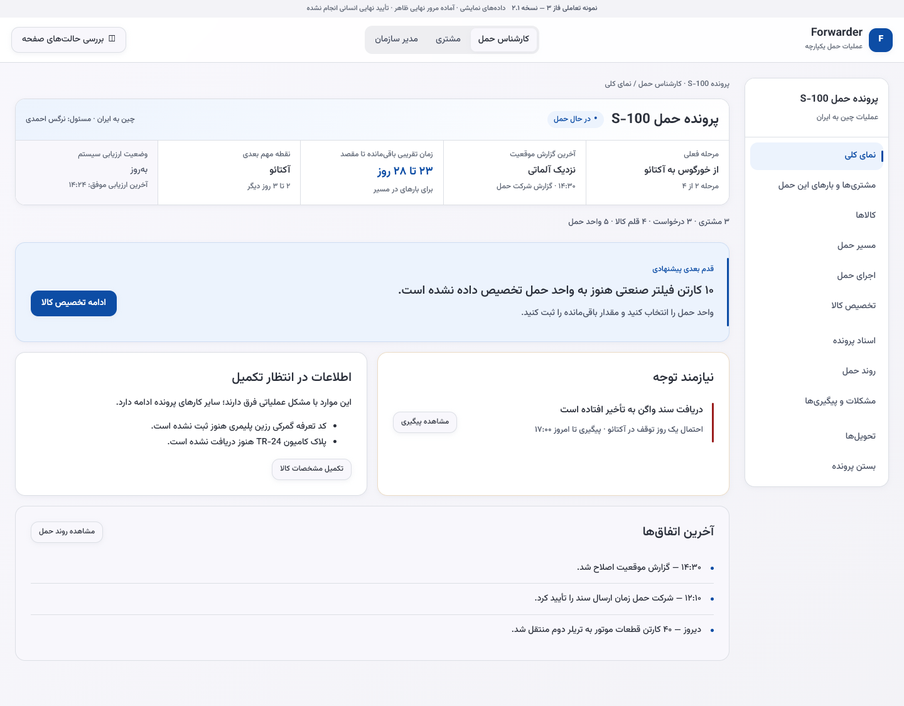
زبانه و ناوبری
Tabs واقعی؛ رندر مستقل
{kind=link}
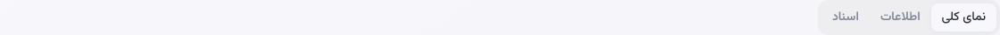
زبانه و ناوبری V2 حفظ شدهاند؛ فقط زبان بصری تطبیق یافته
{kind=link}
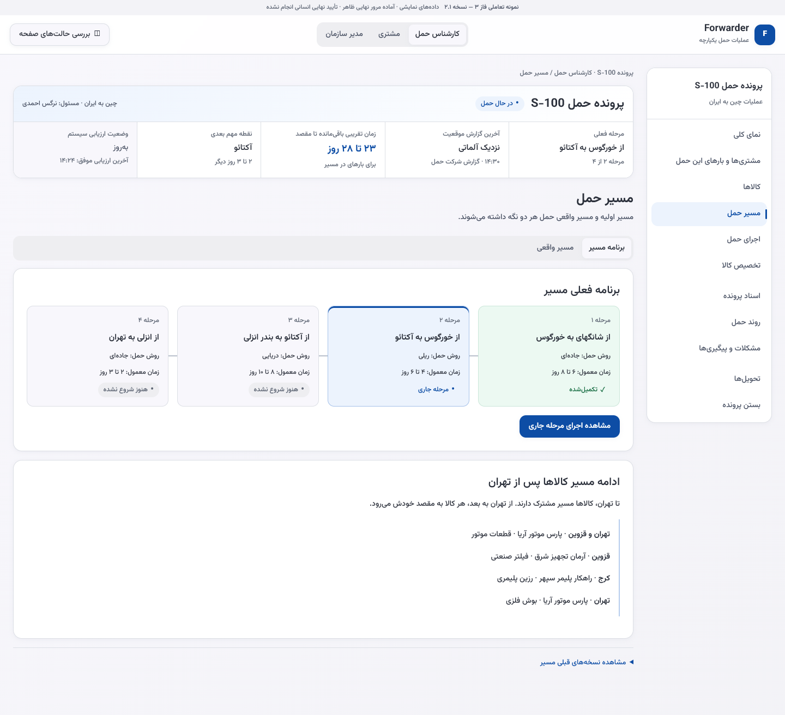
همان خانواده در موبایل
نمونه componentها در ۳۹۰؛ صفحه پرتال مشتری نیست
{kind=link}
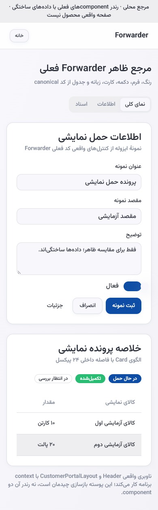
خلاصه مشتری ۳۹۰؛ زمان رسیدن در نمای اول
{kind=link}
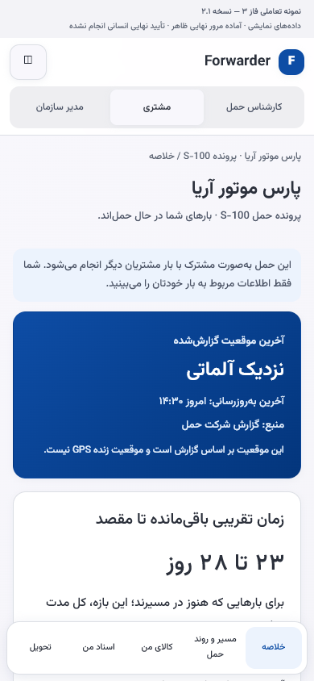
سطحهای کلیدی نسخه ۲.۱
{kind=link}
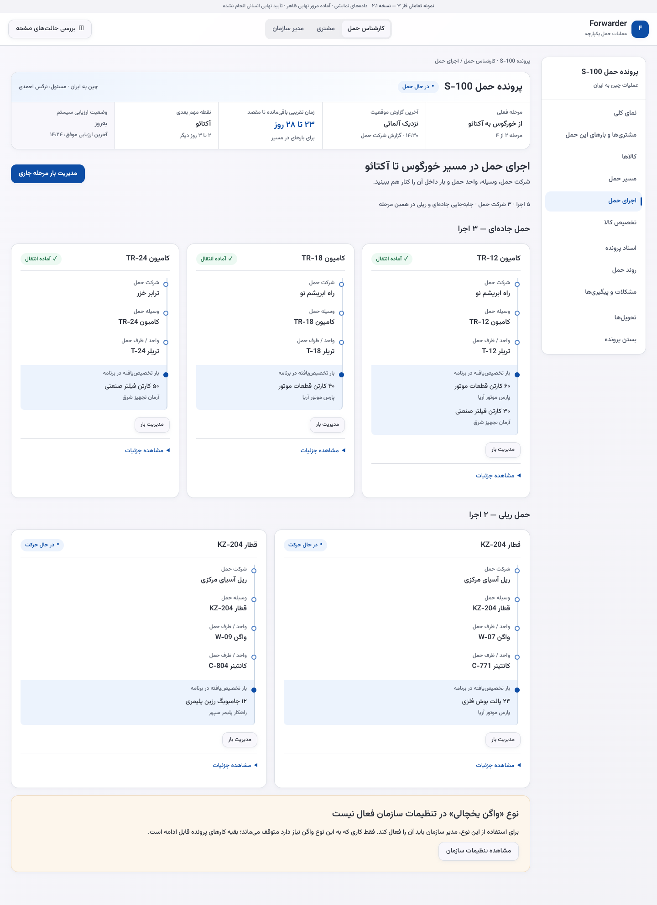
{kind=link}
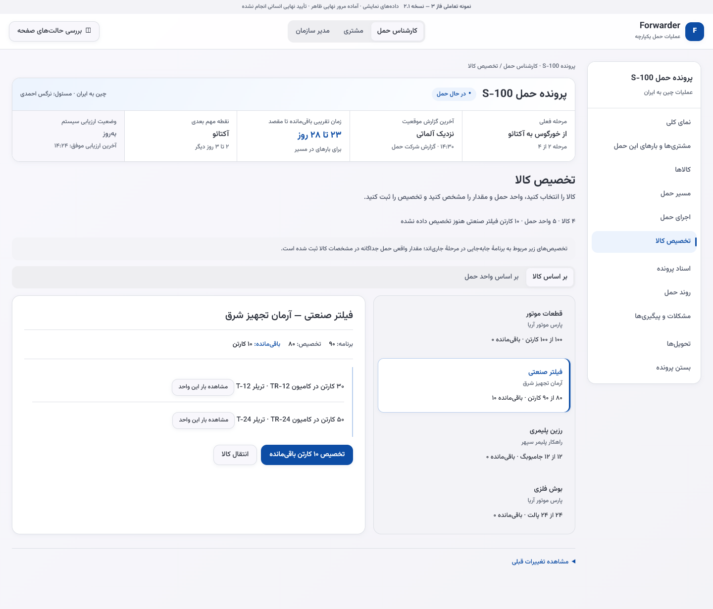
{kind=link}
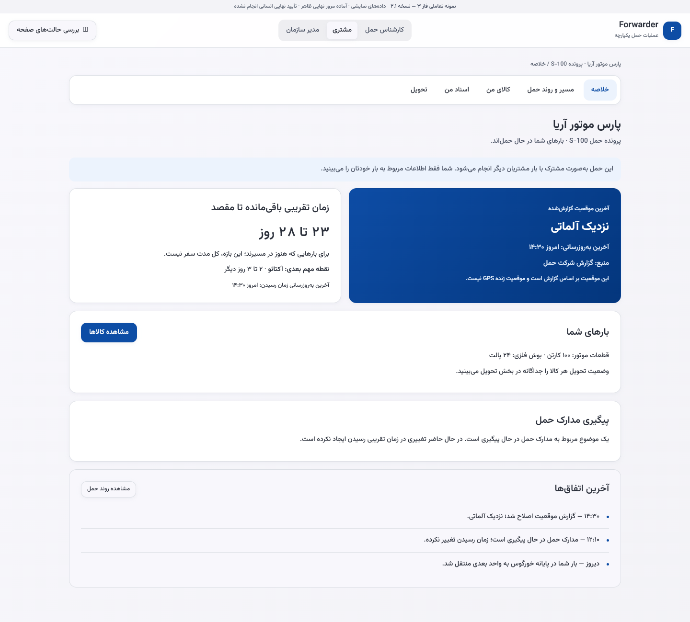
{kind=link}
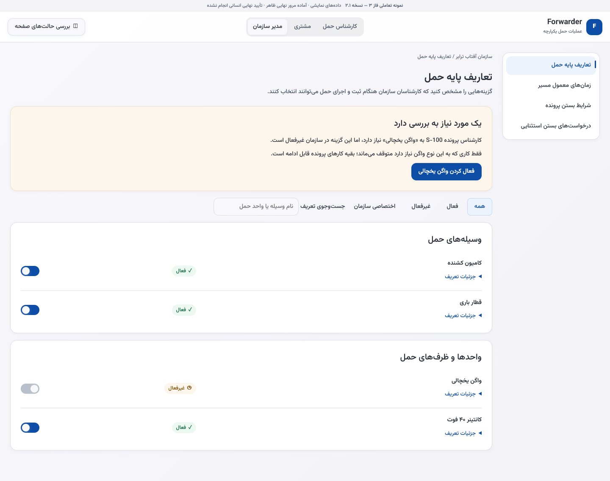
{kind=link}
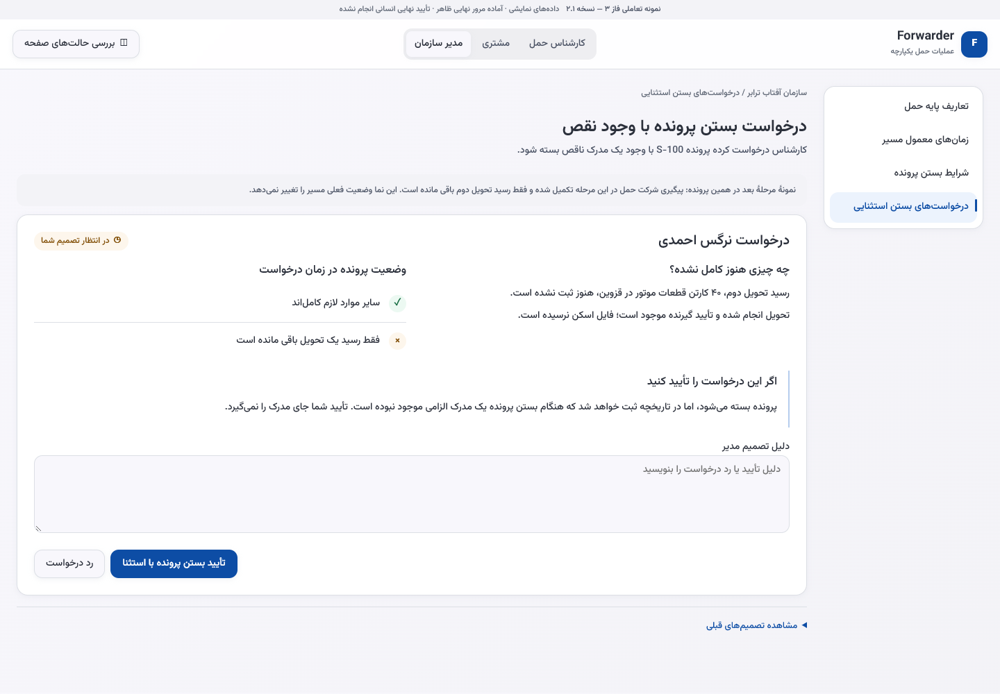
{kind=link}
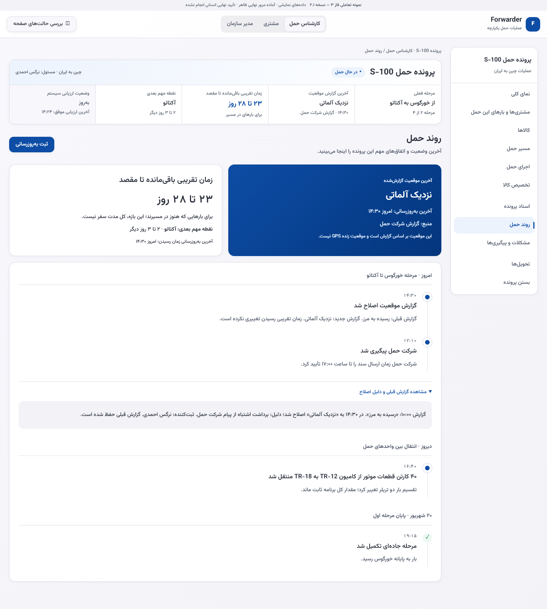
مرجع: d83b1aa7c0011221188e753c0f38d2058859400b · کاندید بصری: 32d5a14ae70f0b74747f4ab4c3a7bea185002dc5